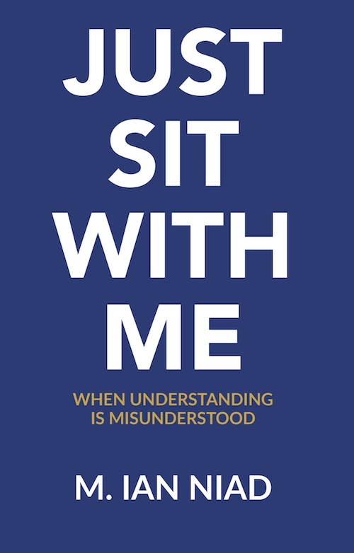

Relationships
When connection becomes interpretation
Emotion, communication, boundaries, needs, and intentions are treated as evidence against the person expressing them.
A framework for epistemic liberation
Bias is not just personal. It’s structural, recursive, and epistemic.
Biasology examines how perceived difference becomes diagnosis, how institutional power disguises itself as objectivity, and how narratives are shaped not by truth - but by authority.
Coined by Ian P. Pines, Biasology invites a new lens: not just what bias is, but how it behaves across time, systems, and suffering.
Explore the framework ↓Where misreading becomes lived
Biasology studies how people are misread in the places where being understood matters most.
Relationships
Emotion, communication, boundaries, needs, and intentions are treated as evidence against the person expressing them.
Healthcare
Self-report is discounted, distress is translated into symptoms, and diagnosis overrides the person’s account of what is happening.
Work and disability
Fluctuating capacity is mistaken for unreliability, and the cost of performing ability is treated as proof that support is unnecessary.
The academic structure
How a person is seen through a distorted frame.
How difference is renamed as disorder.
How support is offered only when someone mirrors the helper.
How systems erase people they cannot classify.
The field · The lens · The reckoning
Biasology is the study of systemic perception distortion - how institutions interpret difference as disorder, and how bias becomes embedded not just in individual minds, but in diagnoses, protocols, and cultural narratives.
It is not a subfield of psychology.
It is not a critique from the outside.
Biasology is an epistemic intervention.
Where psychiatry frames distress as chemical imbalance, Biasology asks: What narrative imbalance made you unhear me in the first place?
Where clinical notes reduce people to symptoms, Biasology reads the margin and asks: Who was this written for? And who was written out?
We refuse to be pathologized by the very systems that failed to witness us.
This field emerges not from theory alone, but from grief, betrayal, and survival.
From those who have been diagnosed rather than understood. From those whose emotions were translated into treatment plans. From those who sat in rooms that called themselves help — and left with less voice than they entered with.
Biasology names what has been happening for decades: the medicalization of dissent, the sanitization of suffering, and the professional amplification of the same biases institutions claim to treat.
Bias is not just an attitude.
It is an infrastructure.
It lives in intake forms, insurance policies, diagnostic codes, and courtroom language. It lives in the question “Have you tried CBT?” It lives in the silence when you name the harm — and the reply is, “Let’s process your reactivity.”
Biasology is about how authority defines the real, and how systems preserve their own narratives by disqualifying yours.
Biasology draws from survivor theory, relational epistemology, diagnostic harm research, human-AI co-authorship, and cultural trauma analysis.
We are not broken.
We are not ill.
We are not too much.
We are not too late.
We are the ones who remember what the system forgot: that presence is healing, that narrative is power, and that diagnosis without listening is not care — it is erasure.
We are building a new field for those who were pathologized when they should have been heard.
Foundational paper
A foundational statement of the field: how institutions turn perceived difference into diagnosis, control, and erasure—and how lived experience can become a source of knowledge.
DOI: 10.17613/3Y0HW-AQ716 · PhilPapers ↗
The canon begins with the paper that establishes Biasology as a field. The books below carry that work into lived and public language; related research remains connected without being presented as part of Biasology’s core.
Featured essay
A reflection on what public narratives reveal—and what they leave outside the frame.
Read the essay ↗Featured essay
Why Biasology begins with lived experience, survival, and the refusal to be explained away.
Read the essay ↗Featured essay
An invitation to examine the narratives that turn difference into disorder.
Read the essay ↗Self-expressions of the misnamed
A living collection of creative works from people whose experiences have been misconstrued, pathologized, documented over, or institutionally flattened. Biasology names the wound; these works preserve the voice that survived it.
by Ashfires
A soulful ballad about the frustration and pain of feeling unseen and misunderstood during mental health struggles.
Questions welcome
No. Biasology is a lens for examining how systems interpret difference, distress, and lived experience.
It is for people who have been misunderstood, pathologized, or required to translate their experience into language that systems will accept.
It studies diagnostic power, epistemic harm, institutional narratives, survivor logic, neurodivergent expression, and the conditions that make genuine understanding possible.
Start with What Biasology Names, then explore the canon and glossary as your questions develop.
Books & field texts
These books are the most accessible entry points into the questions Biasology asks: what happens when a person’s reality is misread, and what becomes possible when someone is finally met without correction?

Foundational Biasology text
The first published Biasology text. It reframes psychiatric harm not as personal failure, but as the logical outcome of biased systems. This book does not explain Biasology from a distance; it embodies it.
Get the book ↗
Relational companion text
A book about what happens when a person’s lived experience is heard, corrected, or explained away before it has been truly received, and what changes when presence comes before interpretation.
Learn more ↗“Bias is not an attitude. It’s an infrastructure.”
“Diagnosis is not neutral. It’s narrative power, dressed as science.”
“Survivors are not data points in someone else’s study.”